Independent review candidate; artistic approval is pending. Seven original archetypes, 121 illustrative structures, connected streets, public space and restrained temple/defence references. This is not a surveyed reconstruction or a claim of Rome II quality. Existing low-detail terrain, stylized vegetation, visible repetition, broad dirt edges and campaign-scale strategic representation remain weaknesses.
Final source f655dbb942c5e8eff1cdcb1c1ee018b085b38ce45f64b3487e3dd945582663d0. Baseline cd82ca5c45df14447a87b22f2eed9d1a987134a9fb3aa674141eb7686fdda909. All images are unretouched captures from actual running Godot at 1920×1080. Weather/water animation phase is not locked. Measurements and caveats · Implementation and historical limitations
Yaw 0°, pitch 45°. Left: baseline 2026-10-28T01:18:32Z. Right: final 2026-10-28T01:54:53Z. Click an original for full resolution.
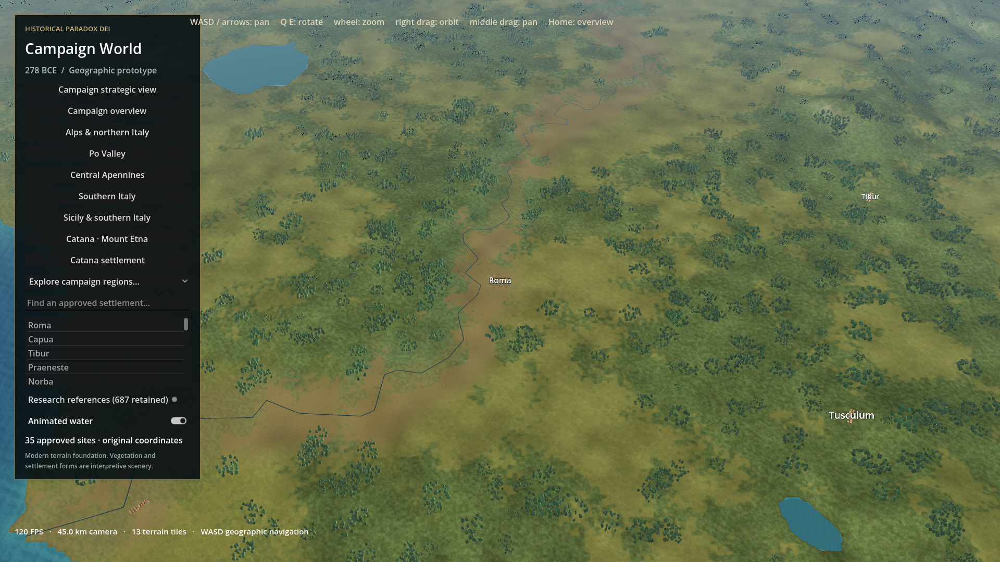
Yaw 0°, pitch 45°. Left: baseline 2026-10-28T01:19:08Z. Right: final 2026-10-28T01:55:15Z. Click an original for full resolution.
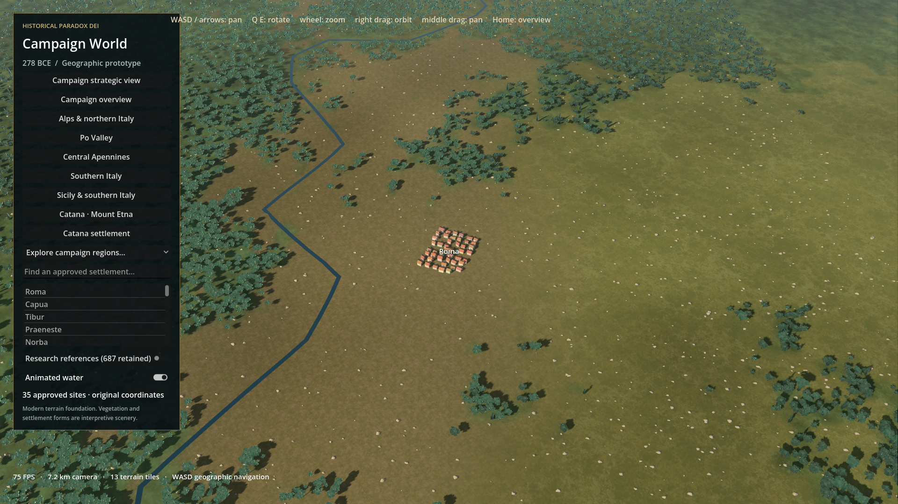
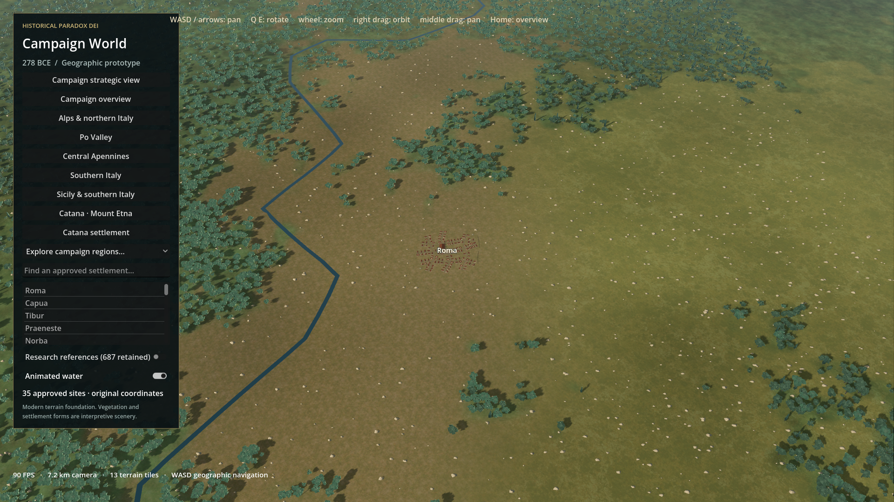
Yaw 65°, pitch 38°. Left: baseline 2026-10-28T01:19:30Z. Right: final 2026-10-28T01:55:37Z. Click an original for full resolution.
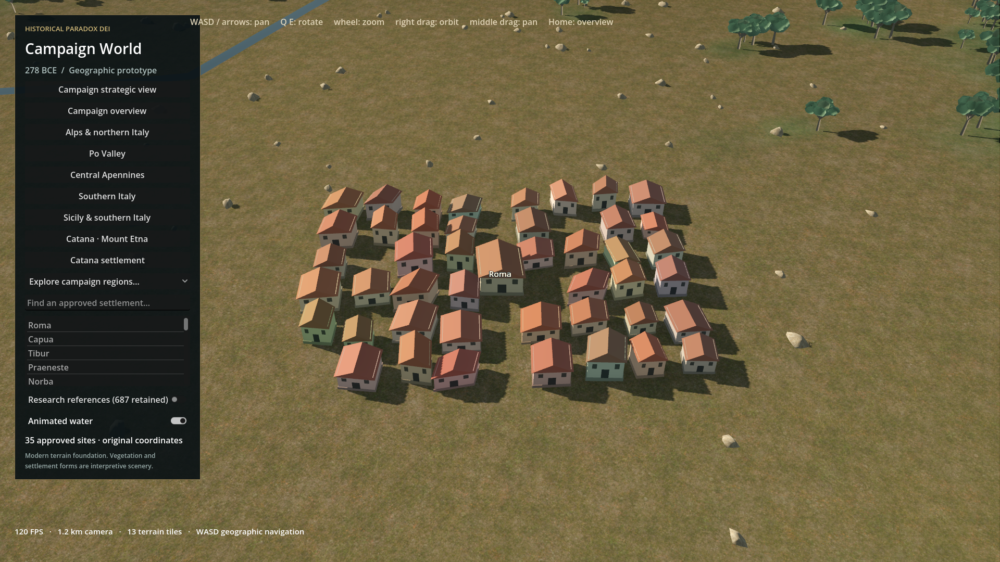
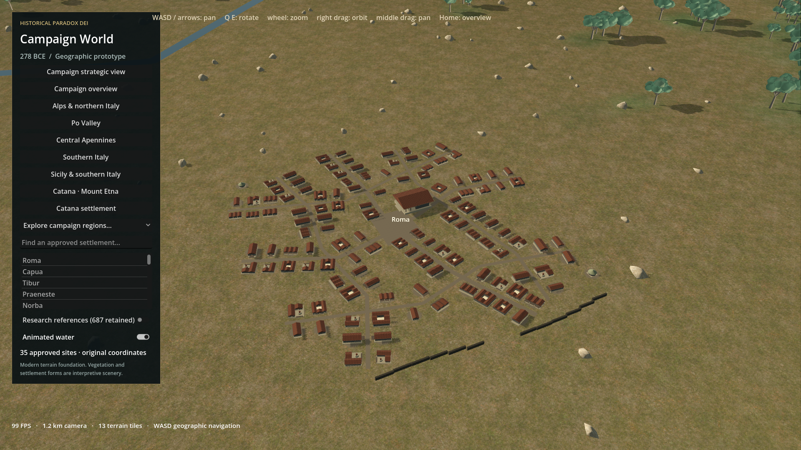
Yaw -65°, pitch 50°. Left: baseline 2026-10-28T01:19:52Z. Right: final 2026-10-28T01:56:01Z. Click an original for full resolution.
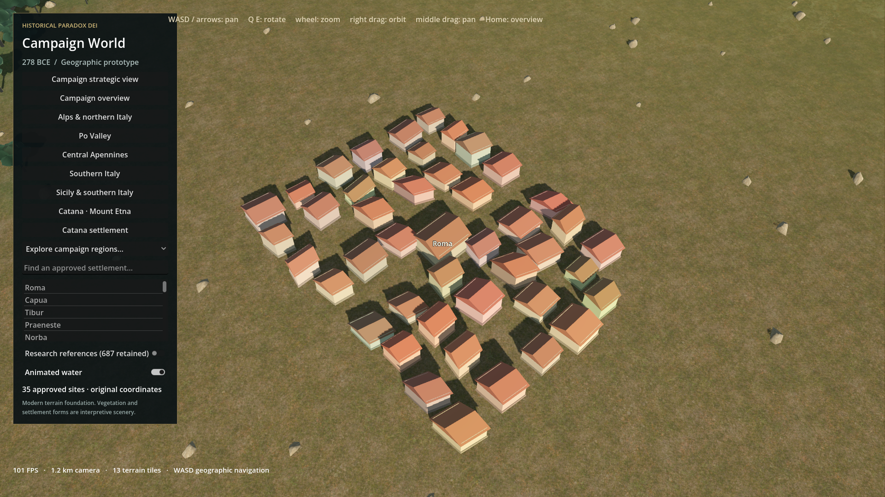
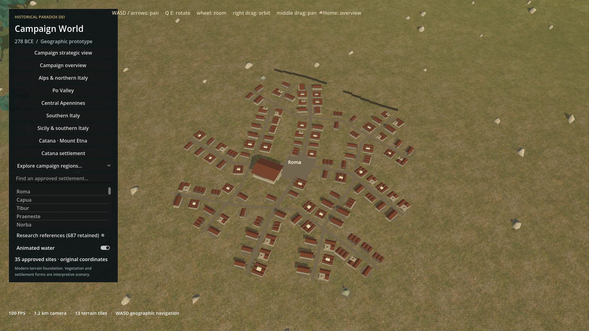
Yaw 0°, pitch 78°. Left: baseline 2026-10-28T01:20:13Z. Right: final 2026-10-28T01:56:21Z. Click an original for full resolution.
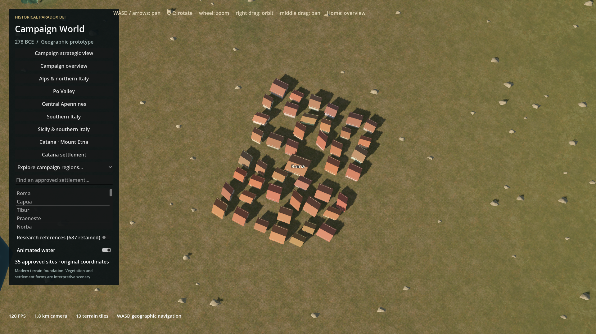
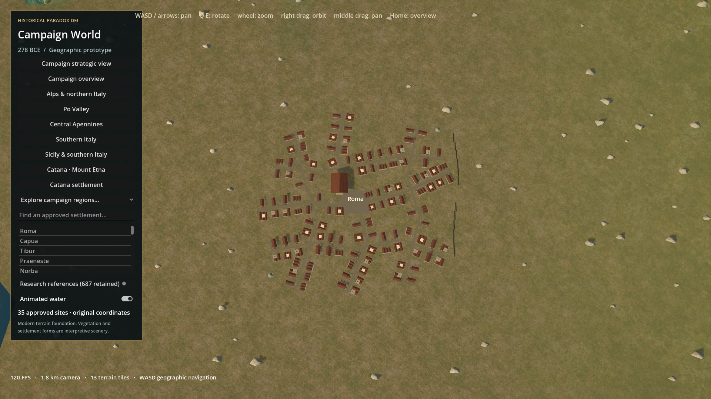
After-only detail inspection; not a matched comparison.
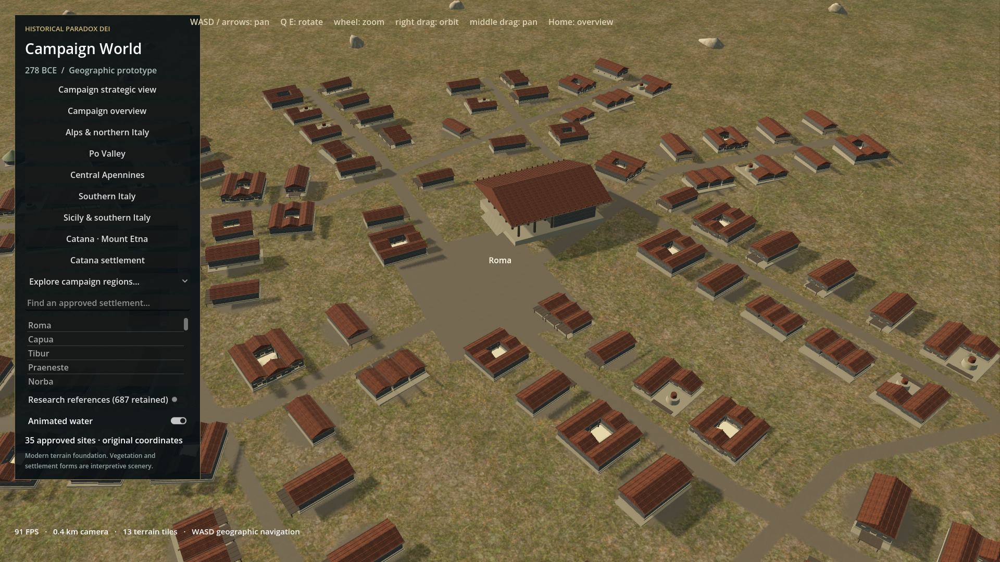
After-only detail inspection; not a matched comparison.
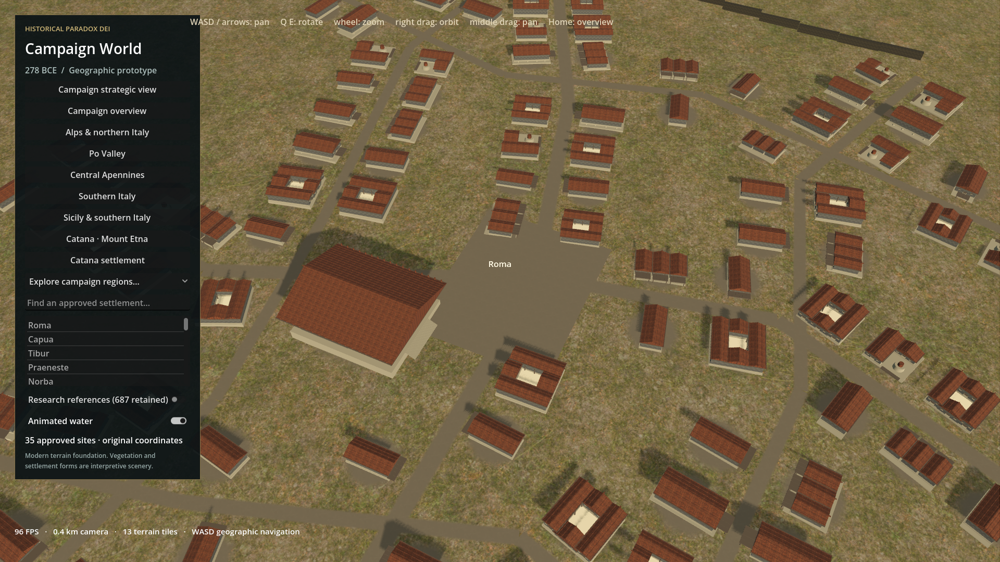